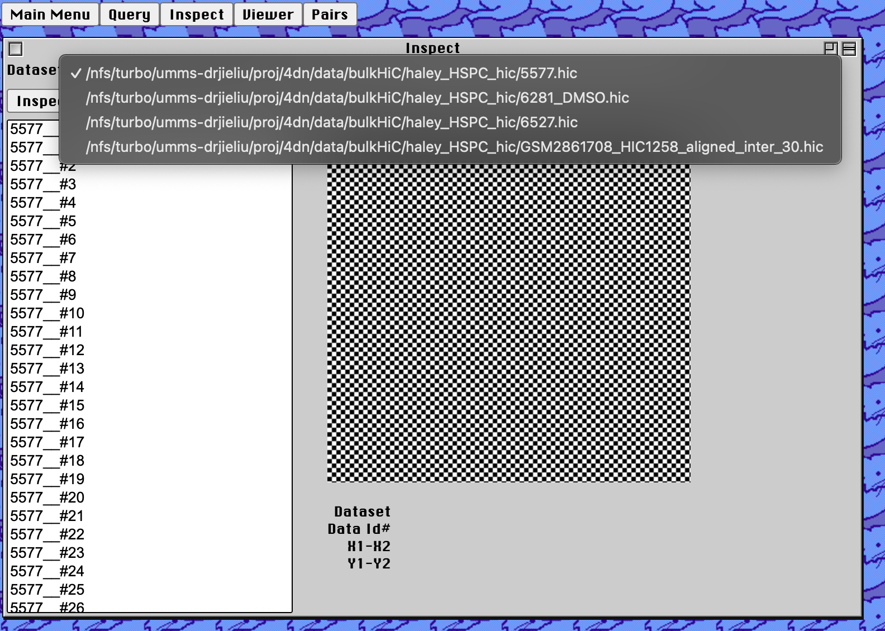
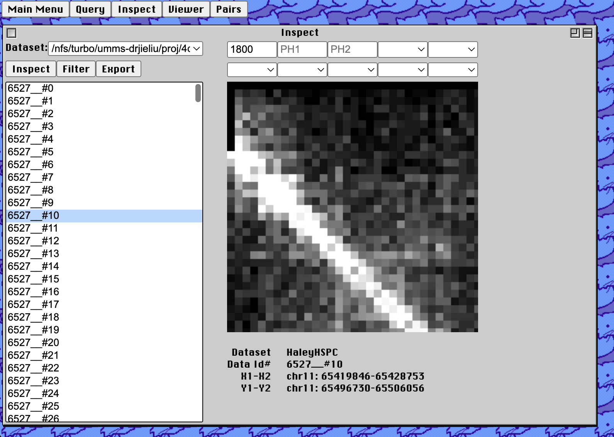

Lariat Documentation
Welcome to Lariat! A toolkit for architectural chromatin analysis. DOCUMENTATION
The overall goal of Lariat is to provide a tool for anyone to easily perform rapid visualization and analysis of chromatin conformation capture results.
Use of the tools relies on the user to have formed a sqlite3 database compatible
for use with Larait via Ingest, which can be found on github at https://github.com/seanpatrickmoran/Lariat.
Briefly, users will need to provide Ingest with original chomratin conformation
capture (3C) data-inputs such as .hic or .cool .mcool files. The user will also need
a secondary file that contains chromatin architectural information in tabular form.
With both of these, ingestion queries and writes the image data and the data's metadata
into a relational database that Lariat can access easily.
Lariat is a convinient combination of tools to visualize, compare, and filter chromatin
architectural features, built specifically with chromatin loops in mind. The easiest way
to use Lariat is to populate its clipboard by exploring filter options under PAIRS and
then finding shared loops or exclusive loops, and then exporting the records using DUMP.
The Query function allows the user to perform read functions on the SQL database linked to Lariat. Query is also useful if the database's contents are not well understood or if the user seeks to combine data from many experiments from publically availible 3C-type data. By default, the database entries are written in exactly the same way via Ingest to the following schema:
imag(name, dataset, condition, coordinates, numpyarr, viewing_vmax, dimensions, hic_path, PUB_ID, resolution, meta)
Lariat supports simplistic calling to the underlying SQLite database. SQL queries rely on the user entering a text input and using the input to check the column names for that input. The column name is specified by the "Choose Field" tag, and submits a query like so:
'SELECT * FROM imag WHERE (FIELD) = (?)';
In this case (FIELD) would be substituted with whatever field the user chooses, and (?) would be the text input.
The Inspect function works by issuing a lookup on the existing datasets in the database, depending on the 3C data-source-path as the keyname for the stored data. The keyname is only a String-value written at the time of logging the data with Ingest. It is not necessary for the keyname to point to a real location reachable on the user computer running Lariat.
To inspect data, select a dataset using the drop-down menu under data-set, and then highlight a corresponding name of an feature entry belonging to the dataset's keyname. Finally, press inspect, this will pre-populate some of the information in the filter-settings above the image, visualize the image, and give a description of the image below.

The vMax or Viewing Maximum is a normalization constant used to determine pixel intensity threshold to make
chromatin features visible. By alittle clever image processing thanks to Ingest, we populate this field with
a vMax number, but the user will be able to change this value to better see chromatin features.
Normalization is the method of normalization used to prepare the image for viewing. This was determined by Ingest
but may also be changed here between Linear, Log Normalization, and Quantile Normalization.
More Parameters There's more!
...
More Parameters There's more!
...
More Parameters There's more!
...
More Parameters There's more!